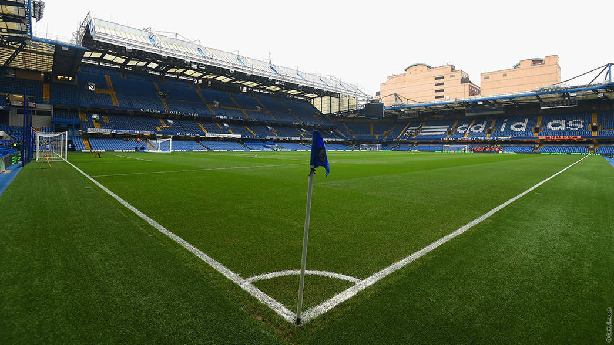

TICKET NEWS
29 Mar 2022
Stamford Bridge
Premier League
Wednesday 20th April 2022
Kick Off: 19:45
Live On Sky Sports
We have received an allocation of 2986 tickets for this fixture.
The tickets will be located in Lower Tier Blocks SL1 - SL4 and Upper Tier Blocks SU1 – SU4.
Discounted Premier League away tickets
We are delighted to remind our loyal travelling supporters that we are continuing to provide a further £4 discount on all away Premier League match tickets this season in addition to the £30 cap on away tickets.
Adult - £26.00
Over 65’s - £21.00
Under 20’s - £21.00
Adult - £26.00
Over 65’s - £21.00
Under 20’s - £21.00
Accessibility tickets will include a free personal assistant, if eligible.
Members purchasing concession tickets must have ID showing proof of age relating to the concession ticket purchased, as you may be required to produce this on entry at the turnstiles.
Supporters will be able to choose the block they would like to purchase online.
Priority booking Period No.1 (PB:1)
Tickets are now on sale to current Members previously on the Away Scheme, until 9am on Friday, April 1st, 2022. Please ensure you book in this window to guarantee your ticket(s) for this fixture.
Priority booking Period No.2 (PB:2)
Tickets for this fixture will go on sale on Friday, April 1st, 2022 at 12pm until 5pm on the same day to all current Platinum, Gold and Travel Club members with 45+ Away points. (All tickets are subject to availability)
Priority booking Period No.3 (PB:3)
Tickets for this fixture will go on sale on Monday, April 4th, 2022 at 11am until 5pm on the same day to all Platinum, Gold and current Travel Club members with 35+ Away points. (All tickets are subject to availability)
Priority booking Period No.4 (PB:4)
Tickets for this fixture will go on sale on Tuesday, April 5th, 2022 at 12pm until 5pm on the same day to all Platinum, Gold and current Travel Club members with 25+ Away points. (All tickets are subject to availability)
Please can members with less than 25 away points keep in touch with this ticket page from 5pm on Tuesday, April 5th, 2022 regarding a possible further priority booking period. Subject to availability.
Tickets can be purchased in the following ways:
Internet Bookings
Please click here to login and purchase tickets online. (Booking fees apply)
Copyright 2022 The Arsenal Football Club plc. Permission to use quotations from this article is granted subject to appropriate credit being given to www.arsenal.com as the source.